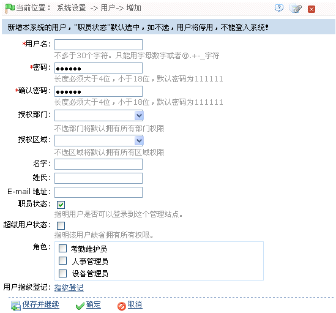

9.1 系统用户管理
9.1.2 用户管理
为系统添加新的用户，分配用户角色（权限）。
-
 新增用户
新增用户
1、单击【系统设置】 【用户】
【用户】 【新增】，进入新增用户页面：
【新增】，进入新增用户页面：

根据需要进行参数设置（其中带*号的为必填项），具体设置方法如下：
用户名：不多于30个字符。只能用字母数字或者字符。
密码：长度必须大于4位，小于18位，默认密码为111111。
设置授权部门：单击 按钮，在弹出的部门下拉框中，选择部门。（不选部门将默认拥有所有部门权限。）
按钮，在弹出的部门下拉框中，选择部门。（不选部门将默认拥有所有部门权限。）
设置授权区域：单击按钮，在弹出的区域下拉框中，选择区域。（不选区域将默认拥有所有区域权限。）
职员状态：指明用户是否可以登录到这个管理站点。
超级用户状态：指明该用户缺省拥有所有权限，点选则为超级用户，不需选择角色。
选择角色：非超级用户需要选择角色。选择某一预先设置好的角色配置，则此用户拥有该角色中配置的所有操作权限。
用户指纹登记：登记用户指纹和胁迫指纹。在用户登录系统时，可以通过在指纹仪上按已登记指纹进行登录；如果用户按胁迫指纹，则会触发报警信号传送到系统。
2、设置完成后，单击【确定】按钮，保存并返回用户页面，此时用户列表中将显示刚新增的用户信息。
 备注：对已有用户可以进行修改和删除操作，点击用户名后的【编辑】或【删除】，进入对应界面操作。具体操作方法与角色的编辑和删除操作一致，请参看9.1.1 角色管理。
备注：对已有用户可以进行修改和删除操作，点击用户名后的【编辑】或【删除】，进入对应界面操作。具体操作方法与角色的编辑和删除操作一致，请参看9.1.1 角色管理。